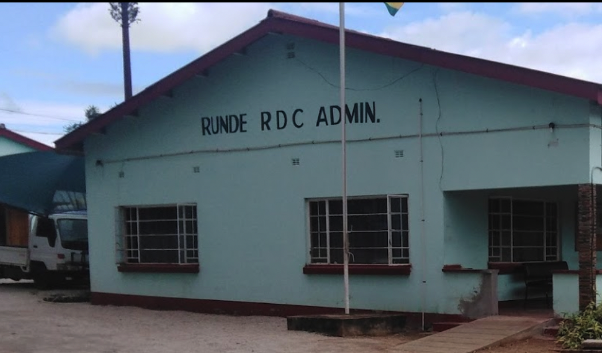

News: Council remembers on of their founding fathers
From one donated vehicle to a plethora of road equipment and from nagging salary backlogs to fixed pay days, Runde Rural District Council Executive Officer for Finance (Finance Director) Tarirayi Sibanda obviously looks back with a great sense of achievement. He retired on February 6 2022, at the age of 55.